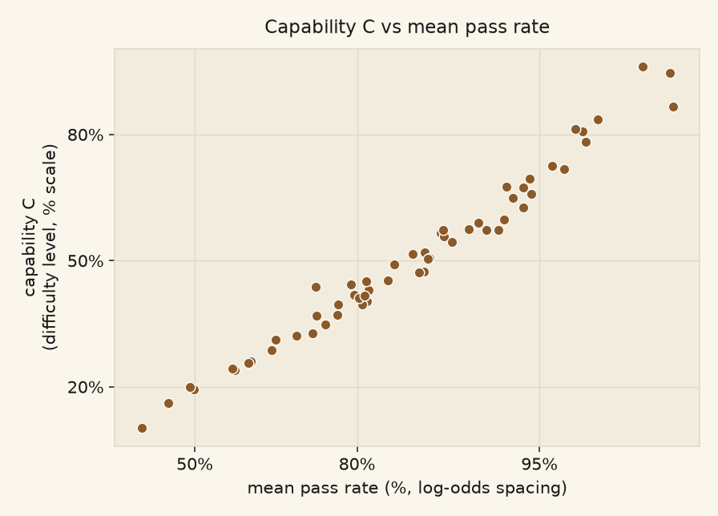
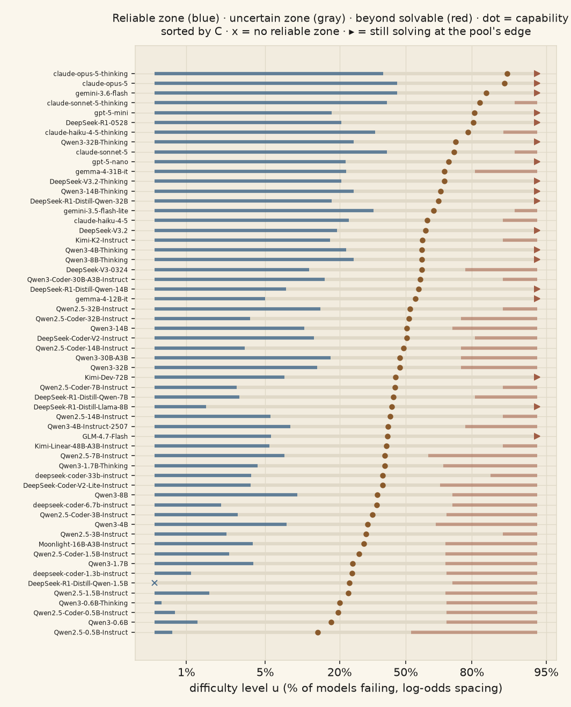
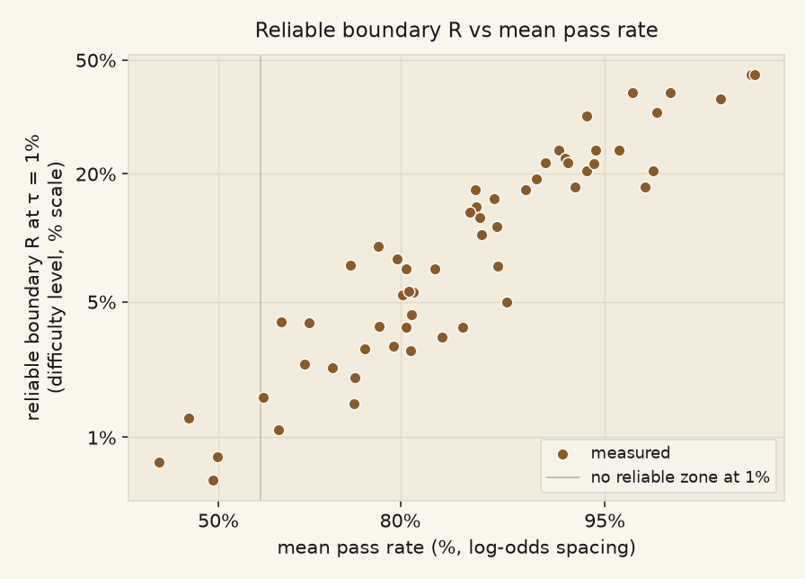
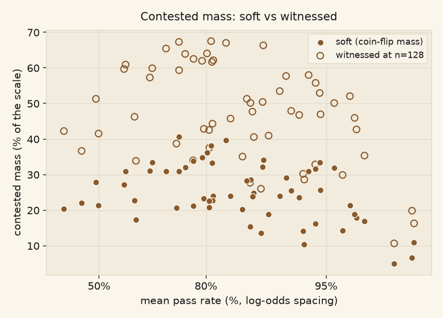

We care about three properties of an AI agent. Reliability: up to what difficulty can you hand it work and expect at most a fixed, small failure rate. Capability: given a task, the chance the model solves it. And a third axis, contested mass: how much of the difficulty spectrum the model is inconsistent on, sometimes solving a task and sometimes not. We quantify all three against tasks. A task is a programming problem with tests; one attempt either passes or fails. Each model ran 128 attempts on each of 431 tasks.
Every quantity below is stated three times, in three marked registers: the definition (exact, in terms of true chances), any identity that follows from it (with its proof, folded), and the estimator we compute from counts (every choice labeled a choice). Empirical facts about the current models are marked as observations.
This page is the outcome of the metrics request: 26 candidate definitions, reduced by a frozen pre-registered test suite, then 14 adversarial attacks by independent agents, then a full mathematical redesign driven by maintainers line-by-line review, itself stress-tested by a fresh critic round before publication (that round killed one of the draft's own headline claims; see the dismissed list). Volatile numbers resolve from the analysis outputs at render time. Long-form evidence lives in this repo's metrics/ and analysis trees.
The pre-registration record of this request, with the axioms and the test suite fixed before any candidate, is the framework page.
Fix a population of models: a probability measure over models, in practice uniform over the 58 models with complete runs on both benchmarks (arms with a run still pending are held out until complete; currently held out: Qwen/Qwen3-30B-A3B-Thinking). (Any other population you could run is a reweighting of this one; nothing below depends on more than that.) Model \(m\) has a true chance \(q_{mt}\), between zero and one, of failing task \(t\) on one attempt.
Definition. The difficulty level of task \(t\) is
$$ u_t \;=\; \mathbb{E}_{m}\bigl[\, q_{mt} \,\bigr] \;\in\; [0,1], $$
the chance that a model drawn at random from the population fails the task on one attempt. Bigger means harder. The level \(u\) is the working coordinate everywhere below; pages and figures display it on a stretched fail-rate axis with percent labels ("1%" marks the level that one model in a hundred fails), because model curves spread out legibly there. Display only; nothing is defined on the stretched axis itself.
Difficulty is population-relative: consensus difficulty for this roster of models. Adding or removing a model moves every level, so the scale is versioned and numbers compare only within one roster.
Estimator. \(q_{mt}\) is estimated by the observed failure frequency; inside \(u_t\) we use the smoothed rate \((f_{mt}+\tfrac12)/(n_t+1)\) so that tasks with 0 or 128 observed failures stay at interior levels. Each model is scored against the full scale, its own rates included; the self-grading bias this accepts is measured (removing a model moves task levels by at most 1.70 points of \(u\)), and the leave-one-out delta ships as a diagnostic column (90th percentile 2.10 points on capability).
Estimator of record. What is served today and what the decision asks for are stated apart. Served: the difficulty axis of a fit is computed once at its cut as the equal-weight Jeffreys mean over the arms holding the task, the pooled smoothed frequency above placed on the difficulty scale, with a delta-method standard error; the approved Bayesian method (one prior head, sampler declared per fit) then fits each arm's failure curve against that axis with errors in variables. So the axis of record is the cut-time axis and the Bayesian posterior of record is per arm curve, not per task. Asked for: maintainers decision that the Bayesian view defines difficulty as one joint distribution, under which a task keeps a difficulty when some models have no cells on it and partial coverage never withholds the estimate. Two form questions sit with the fitting-method maintainers (spec 03m), both open: the task-effect distribution of the per-arm curve fits (single Gaussian, Student-t or two-component mixture; gauntlet defined, unserved, serving on maintainers word), and a per-task position from one joint posterior across arms. No served number claims a joint per-task position. The existing prototype of that construct is the fitting-method maintainers' translation coordinate (one shared curve shape, a per-model shift, per-task positions estimated jointly; 3 to 5 times the held-out predictivity of the official points on three populations; passed the maintainers adoption checklist), not Bayesian and not served; adoption is maintainers act under the 08-26 standing task. A third served-versus-adopted item: both reserved words are read off the average-rate curve, the expected failure rate over the tasks at a difficulty with the fitted task spread included (capability = its 50% crossing, reliability = its 1% crossing); the median-task crossing is the labelled second option. fitting's exported average curve is the Gaussian task-spread transform of its exported median-task curve (the fitting-method maintainers' measurement on the served fit of the new tasks, spec 04a): equal at 50%, so every served capability stands; apart at 1% (by about a third of the original tasks' difficulty range at the median arm, up to about half), and today's levels tables read d1 from the median-task curve, so every served d1 is a median-task crossing under a flag until fitting's tables read the average-rate crossing export (both columns kept; the switch is fitting's act, announced with per-arm moved d1). The fidelity of the derived average curve to the true average under concentration is an estimator question (the fitting-method maintainers' synthetic fits), not a change of estimand.
Axis smoothing. The axis is a task's arm-average failure rate placed on the difficulty scale (a stretched fail-rate scale that keeps very easy and very hard tasks apart), arms equal-weighted. Its estimator applies the Jeffreys pseudo-observation once per task on the task's total attempts, q = (N p̄ + ½)/(N + 1), never once per arm before averaging: per-arm smoothing shrinks the average toward ½ by n/(n+1) whatever the number of arms and confines a one-attempt axis to a narrow band around the middle (no task can read easier than about one in four failing or harder than about three in four) (experiment-design's measurement: re-learning the axis that way at one attempt per arm-task shifts the 1% crossing by about a fifth of the original tasks' difficulty range and flips the design ranking; at 32 attempts the shift is negligible). A count-based axis resolves positions only within about ±log(2N + 1); beyond that, and under few attempts, the joint fit places tasks. Served fits keep their cut-time axis (per-arm smoothing, factor 0.97 at 32 attempts, 0.992 at 128; nothing served moves) until the big fit's cut, which cuts on the adopted recipe as a declared switch. Diagnostics (R-hat, effective sample size, divergences, gate status, prior sensitivity) are disclosed beside each served number and do not gate it. Nor does completeness: every model with data is fitted on its current data and refitted as data lands, fits are served as they land and labelled interim with their coverage, and no definition or gate withholds a fit for want of more data; the gate is honesty about coverage ("we have data but we don't have any way to consume it yet so start doing that"). Among the served averages, the failure rate curves and the reliability crossings, the Bayesian fit is the privileged estimator ("I would privilege Bayesian fit for averages rn"); the local-logistic kernel fit stays a secondary, labelled option. Measured (the fitting-method maintainers spec 04m): on arms with concentrated failures the served Gaussian-task-effect fit misplaces the average-rate 1% crossing toward easier tasks by up to about a quarter of the original tasks' difficulty range and the 10% and 50% crossings by about 0.5 too late on synthetic arms, while count-average readings sit within 0.03 on the synthetic arms (the large gap reported for one real golden arm, claude-sonnet-5, spec 05b, was withdrawn as a concentration measurement: that fit was the most basis-truncated on the served record, the fitting-method maintainers spec 06n; on identical inputs the count-average and posterior 50% crossings agree closely (the median gap is negligible and 32 of 33 arms sit within a small fraction of the original tasks' range), and the clean real-arm comparison waits for that arm's own re-fit at the adequate basis; the golden re-fits move crossings by hundredths of a step at most, so a gap of that size, if real, is not the basis but the fit's behaviour under concentrated failures, the open test on that arm; measured on the golden set (the fitting-method maintainers spec 07b) on the golden set's own inputs, the count-average and posterior 50% crossings agree within a tenth of a difficulty step on all twelve arms, claude-sonnet-5 included, at both basis sizes, so the gap belongs to the served new-task fit's inputs (43 arms, 1,563 tasks at its cut), whose own re-fit stays deferred as adopted); the estimand stands, the task-effect form gauntlet (with a fifth criterion, bias at most 0.10 on the synthetic arms) is the first estimator item, served crossings of arms in that regime carry a flag, and the promotion of the passing form to estimator of record is queued for maintainers. A golden-set variant exists beside the official axis: difficulty defined from twelve arms only (Qwen3 0.6B, 1.7B, 4B and 8B, each plain and thinking; Claude Haiku 4.5 and Claude Sonnet 5, each plain and thinking), with failure rate against difficulty and capability against reliability computed on that axis by every estimator we have, on the original tasks, on the new tasks and on the combined set; it is served as the "golden set" option and labelled a data point, and its serving files carry the state of each half (which arms have landed, which gates flag). The direction of record: failure against difficulty and capability against reliability are to be seen on this consistent set with every method we have, as a data point and not as a new definition of difficulty for all purposes. The membership file is knowledge/golden_set.json.
The tasks used. One task set, one grading convention, one axis. The set \(T\) is every HumanEval and MBPP task together with every pool task carrying the kept status of record; a task is identified by the hash of its content, so a twin is a task of its own and only identical content present in both sources is one task. Membership is by label, not by data: the tasks used are the valid tasks, labelled regular or tricky; a task labelled contradiction or underspecification, or removed by the hand, is not used; the same rule holds on both sides and is unchanged: as adopted, plots never include results from underspecified or contradictory tasks; only the valid tasks are shown. The sentence shared with the estimator pages: the tasks used are the valid tasks, every configuration with data on them is shown, coverage is shown as a figure and a flag and never used to withhold a task or an arm, and the difficulty axis is defined on these tasks and refreshes as data lands, with interim fits labelled as interim ("Let's include all the tasks and as much data as possible … Continuously refine it."). A task in \(T\) with no valid cell keeps its place with the prior as its difficulty until cells land. The two membership mechanisms it set: filtering by labels, and badly defined tasks drifting to high difficulty (a backstop, never a filter) The natural drift of badly defined tasks to high difficulty is a backstop the frame never relies on. The arms are every configuration with at least one valid cell on \(T\); protocol versions are distinct configurations; an arm judged on part of \(T\) enters with its coverage as a figure and a flag, never withheld. A cell is the passes and the attempts of one configuration on one task over the attempts that are valid under the register of the row's source (the pool's adopted judge stamps, the original tasks' judge-era register), one winner rule over both with the pinned judges of either side on the same top tier, pooling of distinct valid draws, version identity; cells of the original tasks enter at their stored attempts and pool cells at the attempts summed over valid distinct draws, and the binomial likelihood carries the unequal attempts without reweighting. The judge environment is part of the convention: one pinned interpreter with the standard library and the evaluation harness's own dependencies (numpy, sympy, networkx, pandas) and no other package, identical for every arm and task on every judging route, so a solution that imports an absent package fails as the arm configured against the declared environment; a route that lacked part of that set is a defect and its judgings are re-judged under the uniform environment; changing the set itself would re-judge every landed cell and is a joint decision with the record, never a judge-lane change. Answers cut at the pool's 768-token cap are not failures to claim: "we can't have this answer cap. We need to run correct generation we can't claim failures in this way"; until each cut answer is continued from its banked prefix under 4,096 tokens and re-judged, the cut share is a flag on the affected cells and the longer new tasks read harder than the models are. Definitions publishes the matrix of arms by tasks that every reader fits or draws from, keyed by content hash and stamped with its basis, and beside it the axis file of the fit of record (task, position, standard error, arms holding the task, ready flag, fit id). The original tasks are the restriction of this task set to HumanEval and MBPP; the pool pages are its restriction to the pool tasks; every page names the restriction it reads. The direction: the frame is every task we have, and board and pool become one set
The plotted sets. The direction: with generation finishing on wave 2 (869 tasks) first, that set is the one to plot. Two plotted sets follow, on the one axis: the 438 original tasks with the 877 focused new tasks, and the 877 focused new tasks by themselves; the parked new tasks are excluded from these plots and from nothing else: the frame and the fits of record keep every kept task (the 09-03 rule), and a tier is a membership label, never a filter on results. The dataset mirrors carry the two sets beside the original, new and combined sets.
Where noise is allowed. Capability is a position on the axis averaged over many tasks, and noise there is acceptable. Reliability is read where an arm's failure curve crosses 1%, at the easy end of the axis, and noise and bias there are not: "any bias in low-difficulty tasks gets amplified." This fixes the estimator for each use. A smoothed per-task frequency \((f+\tfrac12)/(n+1)\) has a zero-failure floor of \(\tfrac12/(n+1)\): 1.5% at \(n=32\), 0.77% at \(n=64\), 0.39% at \(n=128\), so it cannot place a 1% crossing at \(n=32\); the raw frequency \(f/n\) at a true 1% and \(n=32\) shows zero failures on 72% of tasks and 3.1% on a single failure, so it cannot resolve 1% either. Per-task frequencies are therefore first-look and capability readings. Reliability is read from the arm's fitted failure curve in the joint posterior, which pools the evidence of many easy tasks and estimates difficulty and curve together, so that sorting tasks by an estimated difficulty does not select on its noise. Badly defined tasks that escape the labels fail for every arm and sit at the hard end of the axis ("tasks that are badly defined will have higher difficulty naturally"), away from the crossing; this is the backstop behind the label filter, not a substitute for it.
Tasks form a space: every problem one could pose. A probability distribution on that space says what "a random task" means; difficulty is a function on the space, so its distribution is downstream of the task distribution and is not chosen. What can be chosen is a condition on the task distribution: difficulty uniform on the unit interval (a difficulty is the same thing as a percentile), or the Jeffreys alternative derived on the Weighting page. Either condition fixes the rest; the formal statement is in the fold.
Write \(p_m(u)\) for model \(m\)'s average failure chance on tasks at difficulty \(u\), the conditional expectation of \(q_{mT}\) given \(u(T) = u\): its failure curve. Tasks at one difficulty keep their individual chances; that spread is treated below, not assumed away.
Estimator. The pool is a finite sample of tasks from the space, assembled however it was assembled: not a draw from \(\Lambda\). Expectations under \(\Lambda\) are estimated from it by weighting each task by the correction factor \(d\Lambda/d\widehat\Lambda\) between the two, which under a marginal condition depends only on difficulty; the cell construction (each task's weight reaching halfway to its neighbors, ties sharing) estimates it, and under the uniform condition a task's weight is its cell's length in \(u\). One assumption sits here and nowhere in the definitions: within each difficulty, the pool's tasks stand in for \(\Lambda\)'s. The pool covers difficulties 0.500% to 94.0%; the uncovered 6.50% is handled where it matters.
Definition. C is the share of the task population a model solves, the population weighted by a difficulty distribution. Three weightings are served, named after the distributions of difficulty by the record: Capability (uniform), Capability (Haldane) and Capability (Jeffreys); the fold defines each.
$$ C_m \;=\; \Pr\bigl[\, m \ \text{solves}\ T \,\bigr], \qquad T \sim \Lambda . $$
Three task distributions \(\Lambda\) are served; Haldane reads higher than uniform for most models because the many easy tasks spread out along the difficulty scale, and Jeffreys sits between the two. Under Capability (uniform) a task's difficulty \(u\), the share of attempts failing on it averaged over the models, is uniform on \([0,1]\) in the usual sense. Under Capability (Haldane) the weight is even in \(z = \log\frac{u}{1-u}\) over the range the tasks cover, \([z_{lo}, z_{hi}]\), which on the unit scale is the density proportional to \(1/(u(1-u))\) on that range, heavier at both ends:
$$ C^{\text{logit}}_m \;=\; \frac{1}{z_{hi}-z_{lo}} \int_{z_{lo}}^{z_{hi}} \bigl(1 - F_m(z)\bigr)\, dz , $$
with \(F_m(z)\) the model's fitted failure rate at difficulty \(z\); in practice the weights are the Voronoi cell masses of the tasks in \(z\), normalised to one, with no credit for the uncovered easy end.
Under Capability (Jeffreys) the weight on \([0,1]\) has the density proportional to \(1/\sqrt{u(1-u)}\), the Beta(½, ½) law, proper on the whole interval with no cut at the tasks' range:
$$ C^{\text{Jeffreys}}_m \;=\; G(u_{lo}) + \sum_t w_t \bigl(1 - f_{mt}/n_t\bigr), \qquad G(u) = \tfrac{2}{\pi}\arcsin\sqrt{u}, $$
with \(w_t\) the Beta(½, ½) mass of the task's Voronoi cell in \(u\) and the uncovered easy end credited solved with its mass \(G(u_{lo})\), as under the uniform weighting.
No level appears in the definition. Conditioning on the level (tower rule) gives the working identity
$$ C_m \;=\; \int_0^1 \bigl(1 - p_m(u)\bigr)\, d\nu(u) . $$
In words: the chance the model solves a random task on one attempt. This is mean pass rate with the benchmark's incidental easy/hard mix replaced by the declared weighting: a probability, not a score on this particular task collection.
Identity. \(\mathbb{E}_m[C_m] = 1 - \mathbb{E}_\nu[u]\): the roster-average capability is one minus the mean difficulty level under \(\Lambda\): exactly \(\tfrac12\) whenever the marginal has mean \(\tfrac12\). Above 0.5 means better than this population's average.
By definition of the level, \(\mathbb{E}_m[q_{mT} \mid T] = u(T)\); taking the \(\Lambda\)-average, \(\mathbb{E}_m[C_m] = 1 - \mathbb{E}_\nu[u]\). The declared marginal has mean \(\tfrac12\). It holds for any roster and any models, which is why the achieved roster mean below is a diagnostic of estimation fidelity, not of the models.
Estimator. \(\widehat C_m\) is the weighted success frequency over the covered levels, plus the declared completion at the two uncovered ends: levels below coverage (easier than every pooled task, 0.500% of the spectrum) are credited as solved, levels above coverage (6.00%) as failed. The two credits are the monotone completion, they are the entire effect of pool edges on \(C\), and their total (6.50% of the spectrum) bounds how far any completion could move any model's value. Achieved roster mean: 0.499 against the ideal 0.500; the gap is the estimation layer's coverage distortion, printed so it cannot hide. Current median capability: 0.479.
The second good notion, also defined here: the 50% crossing \(X_m\): the level at which the model's failure curve first reaches even odds. A pointwise reading: it needs no \(\nu\) at all, and it is the adopted meaning of bare "capability" in the naming contract. The two agree closely on current data because transition centers are symmetric; divergence between them under pool reweighting is the standing alarm that the pool is reshaping itself around the metric.
Uniform: the identity reads \(C_m = \int_0^1 (1-p_m(u))\,du\); a perfectly consistent model that solves everything up to one level and nothing beyond has \(C\) equal to that level, so \(C\) reads as a percentile of the spectrum, and the figures plot the capability dot at level \(C\) (its step-equivalent position under this weighting). Both candidates have mean ½, so both keep the anchor. Jeffreys: the same model's capability is \(\tfrac{2}{\pi}\arcsin\sqrt{\theta}\), the threshold on the arcsine clock; the ends of the spectrum weigh more, and the pool identifies about 87% of the question instead of about 98% (Weighting page). The ½ roster anchor holds under both (any mean-½ weighting). The 50% crossing needs no weighting at all.

Capability against raw mean pass rate on this pool. The ordering barely changes (rank correlation 0.987, largest single move 11 of 58 places); the value of C is the honest units and the removed benchmark mix, not a new ranking. Observation, not construction.
Both boundaries use one tolerance, fixed here at \(\tau\) = 1% (a chosen anchor). Two readings of "reliable below \(b\)" are good for different reasons, so BOTH are defined and reported: they answer different questions, and one of them needs \(\nu\) while the other does not.
Reliable boundary, cumulative reading, "hand it the whole workload":
$$ R_m \;=\; \sup\Big\lbrace\, b \;:\; \mathbb{E}\bigl[\, q_{mT} \mid u_T \le b \,\bigr] \;\le\; \tau \Big\rbrace . $$
In words: the deepest level such that, handed the entire workload up to it, the model fails at most 1% on average. This reading inherits the choice of \(\nu\) (the average is over the drawn workload).
Reliable boundary, trailing reading, "no bad stretch anywhere":
$$ R^{\mathrm{tr}}_m \;=\; \sup\bigl\lbrace\, b \;:\; p_m(u) \le \tau \ \text{for } \nu\text{-a.e. } u \le b \,\bigr\rbrace , $$
equivalently: every stretch of workload below \(b\), not just the whole, averages within tolerance. In words: the level up to which the failure rate never exceeds 1% anywhere. (Identity) This reading does not depend on \(\nu\) at all: any two difficulty distributions with the same support give the same boundary. This is the cleanest split between the two notions: the cumulative boundary is a property of (model, \(\nu\)); the trailing boundary is a property of the model's curve alone.
Solvable boundaries, both readings, are the mirrors: cumulative \(S_m\) = the level beyond which the whole remaining workload is solved at most 1% on average; trailing \(S^{\mathrm{tr}}_m\) = the level beyond which the success rate never exceeds 1% anywhere. Between a reliable and a solvable boundary lies the uncertain zone of that reading.
Facts, each with its type. (Identity) \(R^{\mathrm{tr}}_m \le R_m\) always (nested conditions); the median gap between the two readings on current data is 5.70 points, the price of banking easy successes. (Identity) \(R \le S\) is a theorem for the trailing pair at \(\tau < \tfrac12\); for the cumulative pair it is not forced (a perfectly sharp model can score a NEGATIVE cumulative width by dilution; the exact value under the declared weighting is in the fold), yet (Observation) zero inversions occur on current models under either reading (0 cumulative, 0 trailing), and capability falls inside the cumulative zone on all 39 fully-defined models (0 violations). (Typed extremes) Cumulative: 1 of 58 models have no reliable zone (they fail over 1% of even the easiest workload), 18 are still solving beyond the pool's hardest levels ("beyond coverage", never a number); those 18 are the live gauge of where the pool needs harder tasks. Trailing: 56 of 58 defined on the reliable side, 40 on the solvable side.
Current medians. Cumulative: \(R\) at the 8.10% level, \(S\) at 76.1%, zone 67.3% of the scale. Trailing: \(R^{\mathrm{tr}}\) at 1.70%, \(S^{\mathrm{tr}}\) at 88.4%, zone 84.4%. The trailing zone is wider on both sides, as it must be: pointwise conditions bind sooner than averages.
The trailing pair is identical under every full-support weighting (the theorem above), so only the cumulative pair is at stake in the weighting choice. Under Jeffreys the extremes carry more of "the whole workload": the reliable boundary deepens for most models (more easy mass to bank) while the solvable side moves model-by-model with where residual success sits; measured on the Weighting page.

The page in one picture (cumulative reading shown): for each model, the reliable zone (blue), the uncertain zone (gray), and the beyond- solvable zone (red), with capability as the dot. Sorted by capability. An x marks models with no reliable zone; an arrowhead marks models still solving at the pool's edge.

The cumulative reliable boundary against mean pass rate. The vertical spread is the point: models with the same pass rate differ widely in how far you can trust them. Roughly linear on these stretched axes with real scatter (R² = 0.870; observation).
A third, strictest reading exists: every individual task below \(b\) has \(q_{mt} \le \tau\) (task-level, not curve-level). Chain (identity, nested conditions): \(R^{\mathrm{task}}_m \le R^{\mathrm{tr}}_m \le R_m\). It is not directly estimable at \(\tau\) = 1% with n = 128 (no single task's attempts can certify a 1% rate), and the measured within-level spread pins it near the scale's floor for every model. Proof sketches: trailing ⇔ pointwise: window averages are bounded by the essential sup, and small windows around any above-tolerance point violate; \(R \le S\) for trailing at \(\tau < \tfrac12\): on any overlap the curve would need to be simultaneously \(\le \tau\) and \(\ge 1-\tau\) on a positive-mass set. The sharp-model dilution counterexample for the cumulative pair, computed under the uniform weighting: \(p = 0\) below \(c\), 1 above, gives \(R_m = c/(1-\tau)\) and \(S_m = (c-\tau)/(1-\tau)\), width exactly \(-\tau/(1-\tau)\) = −1.01%.
A model near its uncertain zone does not fail cleanly; it solves a task on some attempts and not others. The third axis measures how much of the spectrum is in that state.
Definition. For an inconsistency threshold \(\delta\):
$$ Z_m(\delta) \;=\; \Pr\bigl[\, \delta < q_{mT} < 1-\delta \,\bigr], \qquad T \sim \Lambda, $$
the probability that a random task is one the model genuinely mixes on: failing more often than \(\delta\) yet succeeding more often than \(\delta\). No attempt count appears: \(Z\) is a property of the model and the tasks; the number of attempts only limits how small a \(\delta\) the data can certify. Conditioning on the level (tower rule, as for \(C\)):
$$ Z_m(\delta) \;=\; \int_0^1 \Pr\bigl[\, \delta < q_{mT} < 1-\delta \ \big|\ u_T = u \,\bigr]\, d\nu(u), $$
whose integrand is the fraction of tasks at level \(u\) the model contests. If difficulty determined chances (\(q_{mT} = p_m(u_T)\)), the integrand would collapse to an indicator and \(Z\) would be the \(\nu\)-measure of the band \(\lbrace u : \delta < p_m(u) < 1-\delta \rbrace\): the "region of the spectrum" picture is the sufficiency special case, not the definition, and the gap between the two is the task lottery measured below.
Why this quantity. It is the room that retries have. With independent attempts, a second try adds exactly \(q(1-q)\) to a task's solve chance, so the capability gained by best-of-two is precisely \(Z^{\mathrm{soft}}_m/4\) (identity, by linearity; the soft form is defined next). Further tries keep paying only on contested tasks; deterministic mass is immune. So two models with equal capability but different \(Z\) are genuinely different machines: the crisp one is already at its ceiling and predictable task-by-task, the wide one is improvable by resampling and unpredictable on any single run.
The soft form (primary). Thresholds discard how mixed a task is. The threshold-free companion weights each task by its coin-flip content \(4\,q(1-q)\): 1 at a fifty-fifty task, 0 at a deterministic one:
$$ Z^{\mathrm{soft}}_m \;=\; \mathbb{E}\bigl[\, 4\, q_{mT}\, (1-q_{mT}) \,\bigr]. $$
This is the page's headline third-axis number for two reasons stated as facts. (Identity) It has an exactly unbiased estimator from counts: the sample statistic \(4f(n-f)/(n(n-1))\) has expectation exactly \(4q(1-q)\) at every \(q\) and every \(n\). No smoothing, no constants, no resolution floor. (Observation) The thresholded count at the data's resolution overstates inconsistency badly: witnessing "at least 2 failures and 2 successes in 128 attempts" triggers on 37% of tasks with \(q\) = 1% and 13% at \(q\) = 0.5%, so near-deterministic tasks leak in. Measured: median witnessed mass 47.3% of the spectrum, median soft mass 24.0%; half of the witnessed zone is near-deterministic leakage, not genuine coin-flipping.
Current soft contested mass: median 24.0% of the spectrum (quartiles 20.2–31.0%). Widths are \(\nu\)-mass, not distances in hardness.

Soft (filled) and witnessed (open) contested mass per model. The vertical spread at fixed pass rate is the third axis: transition style is not capability. The systematic soft-below-witnessed gap is the near-deterministic leakage of the witness rule.
The retry identity holds under any weighting (it is an expectation under \(\Lambda\)). Jeffreys shrinks the contested mass of models whose struggle zone sits mid-spectrum (its density there is \(2/\pi \approx 0.64\)) and spares zones near the ends; orderings agree at 0.94 with moves up to 13 of 53 places.
Difficulty compresses each task to one number. How much is lost is itself measurable, and it is the most consequential honesty item on this page.
Identity (decomposition). Coin-flip mass splits exactly in two:
$$ \underbrace{\mathbb{E}\bigl[4q(1-q)\bigr]}_{Z^{\mathrm{soft}}_m} \;=\; \underbrace{\int_0^1 4\, p_m(u)\bigl(1-p_m(u)\bigr)\, d\nu(u)}_{\text{transition band of the curve}} \;-\; \underbrace{4\int_0^1 \mathrm{Var}\bigl(q_{mT}\,\big|\, u\bigr)\, d\nu(u)}_{\text{task lottery} \;\ge\; 0} . $$
The first term is what the model's curve says its inconsistency should be; the subtracted term, nonnegative by definition of variance, is the within-level spread: tasks at the same difficulty on which the model's chances differ. If difficulty fully determined a model's chances, the lottery term would be zero and the two views would agree exactly (identity in both directions).
Observation: the lottery is large. Among tasks within a narrow band of a model's own capability level, where the curve reads about 47% failure, a median 29% of tasks are personally extreme (the model fails them under 5% or over 95% of the time), and 7% (up to 12% on a quarter of models) are extreme on the wrong side: reliably solved though harder than the model's level, or reliably failed though easier. No curve can produce those; they are pure within-level spread. Consistently, every model's witnessed contested mass is smaller than its uncertain zone (0 of 58 exceptions; median shortfall -20.6% of the scale; the sign is a theorem under the strictest reading: contested tasks force the zone open, so the mass can never exceed it). The zone is where inconsistency should live; a fifth of the tasks inside it are already decided, one way or the other.
Practical consequence, stated once: workload guarantees and per-task guarantees genuinely differ here. A stretch can average 1% failure while containing individual tasks the model always fails. Which guarantee "reliability" should officially mean is open decision 1.
Every operational choice, each labeled: raw frequencies for boundary and mass rules; smoothing only inside the difficulty levels; task weights = \(\nu\)-mass of Voronoi cells (positions carry the weight, not ranks: a task whose rank is unchanged still moves its neighbours' cells when its level moves); every model scored against the full scale with the self-grading bias accepted and measured (leave-one-out delta as a diagnostic column, 90th percentile 2.10 points of \(u\) on capability); boundaries placed at cell edges so a perfectly sharp model gets trailing zone width exactly zero; boundary values at the coverage edge typed "beyond coverage", never printed as numbers; uncertainty bands by resampling attempts and level positions jointly. The covered range and per-end uncovered mass print on every figure's data strip; all quantities recompute from the two canonical CSVs at every refresh.
The original 26 candidates were reduced by a frozen pre-registered suite (stability under task addition and duplication, replication across independent task halves, model-set changes, blind reimplementation), then 14 adversarial attacks, two per survivor, each required to reproduce published numbers before its findings counted. The redesign on this page was itself attacked before publication by a six-agent round (three critics, two counterexample builders, one independent recomputation of every headline number); that round killed the draft's intended headline ("contested mass exceeding the uncertain zone measures the lottery": impossible, the inequality runs the other way, a sign theorem) and replaced it with the variance decomposition above. Standing lessons baked into the definitions: task levels carry measurement noise, coverage has edges, the scale is computed from the models it grades (bias accepted and measured), and averaged readings can hide interior violations (hence the quantifier menu with its chain).
A snapshot of where the current models sit on these axes; it changes with every fit and is kept in the fold.
The one list of what is open on maintainers for Definitions. Every other place (the front page, STATUS.md, WORKING-STATE.md) points here. Each item asks its question in one sentence first; the options are lettered; all of the work is free.
adopted and closed: the difficulty axis of each fit is set by every arm with at least 90% of that set's tasks scored, nothing else excludes an arm, and no axis is unified across fits (adopted 10 September, in three steps: a fixed set of models may set the axis; more models are better judges of difficulty than fewer, so the set should be as wide as the coverage allows; and each fit keeps its own set, with gemma-4-12B in; Definitions' first proposal of one unified 48-arm panel with noise exclusions was rejected, and its Gemma cut figure corrected, as recorded in the ledger). Panels of record in knowledge/difficulty_panel.json: wave 1+2 51 arms, wave 1 58 arms, the live board + pool axis 51 today under the same rule; the switch waits on the cuts' gates and the new positions are reported once; the scorer (pass means both the base and the plus tests pass; adopted 2 September, reversing the earlier reading); the 2PL diagnostic adopted project-wide as a diagnostic, never the official measure; crossings are read off the average-rate curve (4 September); difficulty is judged by the golden twelve for the pilot and single-task label changes never trigger a re-cut (8 September); crossings on pages read as difficulty percent, never as task counts (10 September).
The definition website receives, per quantity: its definition and in-words line as printed here, per-model values with typed extremes ("no reliable zone", "beyond coverage") and uncertainty bands, the zones figure, and the standing diagnostics (coverage strip, self-grading leave-one-out deltas, witnessed-vs-soft comparison, scale version). The seven promoted attacks from the adversarial round remain the regression suite for any future metric. All outputs are versioned CSVs; seeds and specs frozen.